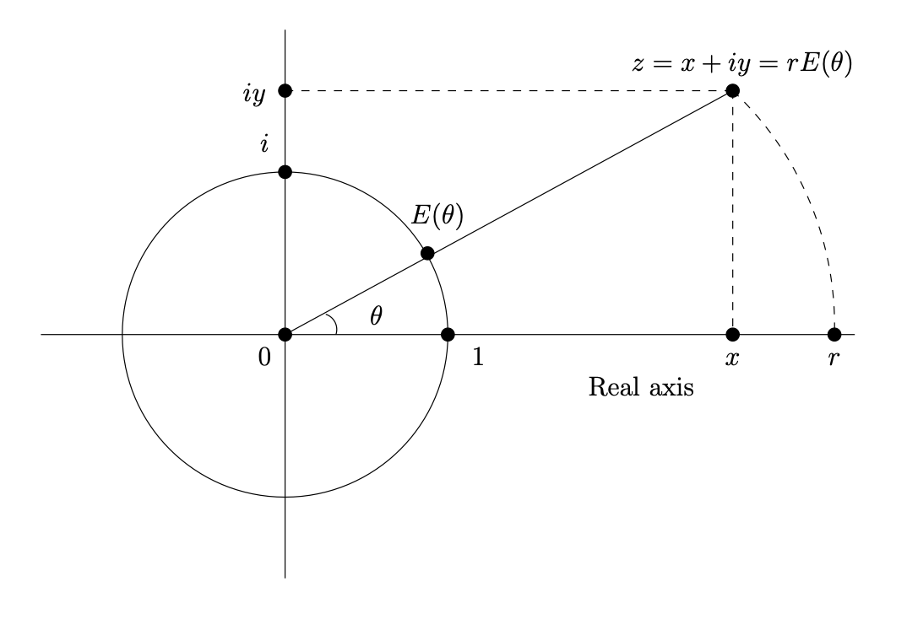

Section 2.3 The Complex Plane
Elements in the set of complex numbers \(\C\) are in one-to-one correspondence with points in the Cartesian plane \(\R^2\text{.}\) We will write \(z\leftrightarrow (x,y)\) to denote that the complex number \(z\) corresponds to the ordered pair \((x,y)\) in \(\R^2\text{.}\)
Given a complex number \(z\leftrightarrow P\) corresponding to the point \(P=(x,y)=(r\cos \theta,r\sin \theta)\) with \(r\geq 0\text{,}\) we say that \(x\) is the real part of \(z\text{,}\) and that \(y\) is the imaginary part of \(z\text{,}\) denoted \(\re(z)=x\text{,}\) and \(\im(z)=y\text{,}\) respectively. We say that \(r\) is the norm or modulus of \(z\text{,}\) and we say that \(\theta\) is an argument of \(z\text{,}\) denoted \(|z|=r\) and \(\arg(z)=\theta\), respectively.
The set \(\C\) contains the set \(\R\) as a subset in the following way. The real number \(x\text{,}\) which is also the complex number \(x\text{,}\) corresponds to the ordered pair \((x,0)\text{.}\) A complex number that corresponds to an ordered pair \((0,y)\) is called (pure) imaginary. The complex number that corresponds to the ordered pair \((0,1)\) is called \(i\) . The complex number 1 is the same as the real number 1 and corresponds to the point \((1,0)\text{,}\) and the complex number 0 is the same as the real number 0 and corresponds to the origin \((0,0)\text{.}\)
Let \(z \leftrightarrow (a,b)=(r\cos \theta,r\sin\theta)\) and \(w\leftrightarrow
(c,d)=(s\cos\phi,s\sin\phi)\) be complex numbers with \(r,s\geq
0\text{.}\) The sum of \(z\) and \(w\text{,}\) denoted \(z+w\text{,}\) is defined by
\begin{equation}
z+w \leftrightarrow (a+c,b+d).\tag{2.3.1}
\end{equation}
The product of \(z\) and \(w\text{,}\) denoted \(zw\text{,}\) is defined by
\begin{equation}
zw \leftrightarrow
rs(\cos(\theta+\phi),\sin(\theta+\phi)).\tag{2.3.2}
\end{equation}
\begin{equation}
\alpha z \leftrightarrow
\alpha P\tag{2.3.3}
\end{equation}
Checkpoint 2.3.1.
Next we establish two basic ways to represent complex numbers, called the rectangular form (or the Cartesian form) and the polar form. Let \(\expi(\theta)\) denote the complex number that corresponds to the point \(\wrap(\theta)=(\cos\theta,\sin\theta)\) on the unit circle, and let \(z\leftrightarrow (a,b)=(r\cos\theta,r\sin\theta)\) with \(r\geq 0\text{.}\) We have the following.
\begin{align}
z\amp = a+bi \amp \amp (\text{rectangular form})\tag{2.3.4}\\
z\amp = rE(\theta)\amp \amp (\text{polar form})\tag{2.3.5}
\end{align}
In particular, we have the following expression for \(E(\theta)\) in rectangular form.
1
The function \(E\) is also called the "cis" function (for "cosine \(i\) sine"), implemented in many software libraries.
\begin{equation}
\expi(\theta)=\cos\theta + i\sin\theta\tag{2.3.6}
\end{equation}
Figure 2.3.2 shows a summary of the geometric content of the rectangular and polar forms for a complex number \(z\text{.}\)

Complex multiplication and addition obey the following distributive law, for all complex numbers \(z,u,v\text{.}\)
\begin{equation}
z(u+v) = zu+zv\tag{2.3.7}
\end{equation}
Here is how complex addition looks in rectangular form.
\begin{equation}
(a+ib)+ (c+id) = (a+c) + i(b+d)\tag{2.3.8}
\end{equation}
Here is how complex multiplication looks in rectangular and polar forms.
\begin{align}
(a+ib)(c+id) \amp = (ac-bd) +
i(ad+bc)\tag{2.3.9}\\
(r\expi(\theta))(s\expi(\phi)) \amp = rs\expi(\theta + \phi)\tag{2.3.10}
\end{align}
Checkpoint 2.3.3.
Express each of the following in rectangular and polar form.
- \(\displaystyle 3(2-i) + 6(1+i)\)
- \(\displaystyle \left(2\expi({\pi/6})\right)\left(3\expi({-\pi/3})\right)\)
- \(\displaystyle (2+3i)(4-i)\)
- \(\displaystyle (1+i)^3\)
Using (2.3.10), we have the following for \(r\neq 0\text{.}\)
\begin{equation}
\left(r\expi(\theta)\right)\; \left(\frac{1}{r}\expi(-\theta)\right) = 1\tag{2.3.11}
\end{equation}
For \(z=r\expi(\theta)\) with \(r\neq 0\text{,}\) we call \(\frac{1}{r}\expi(-\theta)\) the multiplicative inverse of \(z\text{,}\) denoted \({1}/{z}\) or \(z^{-1}\text{.}\) We define the quotient \(z/w\) or \(\frac{z}{w}\) by
\begin{equation}
\frac{z}{w} = zw^{-1}.\tag{2.3.12}
\end{equation}
The conjugate of the complex number \(z=x+iy=r\expi(\theta)\text{,}\) denoted \(\overline{z}\) or \(z^\ast\), is defined to be \(z^\ast = x-iy =
r\expi(-\theta)\text{.}\) Geometrically, \(z^\ast\) is the reflection of \(z\) across the real axis (the \(x\)-axis) in \(\R^2\text{.}\) Here are some relations involving conjugates. For all \(z,w\in \C\text{,}\) we have the following.
\begin{align}
\re(z) \amp = \frac{z + z^\ast}{2}\tag{2.3.13}\\
\im(z) \amp = \frac{z - z^\ast}{2i}\tag{2.3.14}\\
|z|^2 \amp = zz^\ast\tag{2.3.15}\\
2\arg z \amp = \frac{z}{z^\ast} \;\;(\text{for } z\neq 0)\tag{2.3.16}\\
\frac{1}{z}
\amp = \frac{z^\ast}{zz^\ast}= \frac{z^\ast}{|z|^2} \;\;(\text{for } z\neq 0)\tag{2.3.17}\\
(zw)^\ast \amp = z^\ast w^\ast\tag{2.3.18}
\end{align}
Checkpoint 2.3.4.
Express each of the following in rectangular and polar form.
- \(\displaystyle \displaystyle \frac{2+i}{3-i}\)
- \(\displaystyle \displaystyle \frac{1+2i}{1-2i}\)
- \(\displaystyle \displaystyle \frac{2\expi({\pi/4})}{3\expi({-\pi/2})}\)
Exercises Exercises
1.
2. The triangle inequality.
Prove the following property of norm, called the triangle inequality: For any two complex numbers \(z,w\text{,}\) we have
\begin{equation}
|z+w|\leq |z|+|w|.\tag{2.3.19}
\end{equation}
3.
Prove (2.3.15).
4.
Let \(p\) and \(q\) be complex numbers. Prove that the distance (ordinary distance between points in the plane) between \(p\) and \(q\) is \(|p-q|\text{.}\)Hint.
Use rectangular form.
5.
Verify the formulas (2.3.13) and (2.3.14).6.
Given a nonzero complex number \(z\text{,}\) explain why \(z\) has exactly two square roots, and explain how to find them.
7.
Find all complex solutions of the following equations.- \(\displaystyle \displaystyle z^2 + 3z + 5 = 0\)
- \(\displaystyle (z - i)(z + i) = 1\)
- \(\displaystyle \displaystyle \frac{2z + i}{-z+3i} = z\)
8.
Use the fact that \(\expi({a})\expi({b})=\expi({a+b})\) together with (2.3.6) to derive the trigonometric angle sum formulas below.
\begin{align*}
\cos(a+b) \amp = \cos a \cos b -\sin a \sin b\\
\sin(a+b) \amp = \cos a \sin b + \sin a \cos b
\end{align*}
9. Complex numbers as \(2\times 2\) real matrices.
Let \({\mathcal M}_\C\) denote the set of \(2\times
2\) matrices of the form \(\left[\begin{array}{cc}a\amp
b\\-b\amp a\end{array}\right]\) with \(a,b\in \R\text{.}\) Given a complex number \(z\) with Cartesian form \(z=a+bi\text{,}\) let \(M(z)\) denote the matrix \(\left[\begin{array}{cc}a\amp
b\\-b\amp a\end{array}\right]\) in \({\mathcal
M}_\C\text{.}\) Conversely, given a matrix \(M\in {\mathcal M}_\C\) with top left entry \(a\) and top right entry \(b\text{,}\) let \(C(M)\) denote the complex number \(a+bi\text{.}\) It is clear that the mappings \(z\to M(z)\) and \(M\to C(M)\) are inverses to one another, and establish a one-to-one correspondence \(\C\leftrightarrow {\mathcal M}_\C\text{.}\)
- Show that \({\mathcal M}_\C\) is closed under addition and multiplication. That is, suppose that \(M,N\) are elements of \({\mathcal M}_\C\text{.}\) Show that \(M+N\) and \(MN\) are also elements of \({\mathcal M}_\C\text{.}\)
- Show that complex addition and multiplication are "mirrored" in \({\mathcal M}_\C\text{.}\) That is, show that\begin{align} M(z+w)\amp =M(z)+M(w)\tag{2.3.20}\\ M(zw)\amp =M(z)M(w).\tag{2.3.21} \end{align}
- Use these results to justify the distributive law (2.3.7).
10. The complex exponential function.
The Taylor series for the real function \(y=e^x\) is
\begin{equation*}
e^x = 1 +x +\frac{x^2}{2} +\frac{x^3}{3!} + \cdots .
\end{equation*}
Convergence for sequences and series of complex numbers can be defined in a way that naturally extends the definitions for real numbers. It turns out that the complex power series
\begin{equation*}
1 +z +\frac{z^2}{2} +\frac{z^3}{3!} + \cdots
\end{equation*}
converges for every complex number \(z\text{,}\) so we define the complex exponential function by
\begin{equation*}
e^z= 1 +z +\frac{z^2}{2} +\frac{z^3}{3!} + \cdots .
\end{equation*}
The complex exponential obeys familiar laws of the real exponential. For \(z,w\) in \(\C\text{,}\) we have
\begin{align*}
e^ze^w \amp = e^{z+w}\\
e^0 \amp =1
\end{align*}
A key property of the complex exponential is the following, called Euler’s formula.
Euler’s formula.
\begin{equation}
e^{it}= \cos t + i\sin t \;\;\text{(for $t$ real)}\tag{2.3.22}
\end{equation}
Comment on usage: In these notes, we have used \(E(\theta)\) in place of \(e^{i\theta}\) for the complex number \(\cos \theta+i\sin\theta\) because the definition of \(E(\theta)\) does not require the theory of infinite series. Virtually all texts and reference materials use \(e^{i\theta}\) instead of \(E(\theta)\text{.}\) The fact that \(E(\theta)=e^{i\theta}\) for all real values of \(\theta\) means that it is not necessary to justify the details of the complex exponential function in order to use the complex algebra described in these notes. Nonetheless, it is useful to have at least the basic idea of where Euler’s formula comes from, and that is the purpose of this exercise.